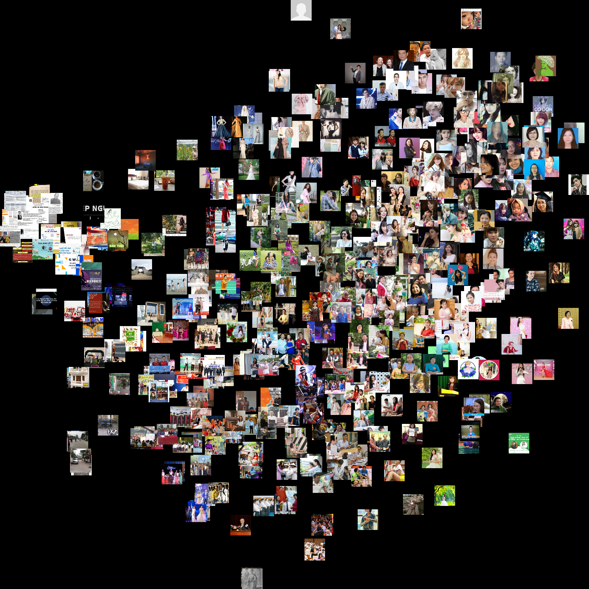
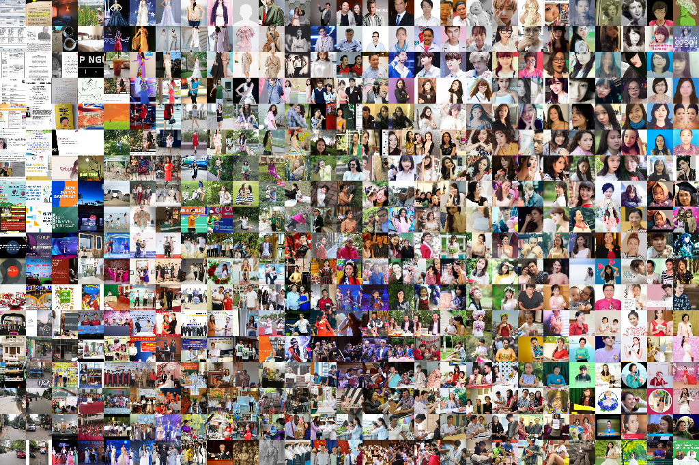

25th Aug 2018
Makeup Review Generator
Using char-rnn to generate fake makeup reviews for products I bought on Yestyle (Asia's equivalent of Sephora/Douglas). By submitting a certain amount of reviews, I get discount on all purchases $$$.
 Submit reviews > upgrade membership > discount! LOL
Submit reviews > upgrade membership > discount! LOL
Some of the outputs:
It took them a day to check my reviews but they went through in the end!
Got rewarded with my fake reviews
My review on Yestyle
Takeaway: Half an hour spent on finding and cleaning up the dataset, 22 hours spent on training while I can easily write these reviews in 20 minutes.
Human 1 – Machine 0.
23rd Aug 2018
People With My Name
I have a generic Vietnamese name so I wonder if any of my photos would pop up in Google Image search. Within the first 500 results, nope! Using image-tSNE, these results were clustered based on their similarity in content.
Hats off to Aaron for creating tools to scrape images from Google Image and Bing
 
21st Aug 2018
Cracked Mirror
Using rocks to destroy your webcam, the amount of rocks equal to the amount of damage/cracks. Then bring it back to life by throwing in some tapes.
How it works:
- Use DoodleClassifier, an openFramworks application, to train a classifer to regconise rocks and tapes from the camera.
- After training, the application will send an OSC message for each predicted class as a string to Processing ("rock" and "tape").
- Based on the amount of received OSC messages, Processing will then calculate how many rocks and tapes are on the tables in order to output your webcam's damage status
 Physical setup: Camera looking over a canvas
Physical setup: Camera looking over a canvas
 Train classifier to recognise rocks and tapes on the canvas
Train classifier to recognise rocks and tapes on the canvas
How damage status is calculated?
- 1 tape = +10 health (no crack)
- 1 rock = -10 health (tiny crack)
- 6 rocks + 2 tape = -40 health (severe crack)
 Aaand make it crack!
Aaand make it crack!
20th Aug 2018
Virtual Rachel
Using pix2pix to control Rachel's face (one of my favourite humans!). Running real-time on a webcam. Input on the left, output on the right.
 Training dataset contains 400 of these.
Training dataset contains 400 of these.
20th Aug 2018
Audio t-SNE
Placing similar-sounding audio recordings near each other using t-SNE dimensionality reduction technique
Dataset: ESC-50, a collection of 2000 environmetal audio recordings.
19 Aug 2018
Shader Weekend
A few shaders from Shadertoy I converted to work with Processing 3. More will be added soon!
CCCV-camera filter
 Psychedelic kaleidoscope filter
Psychedelic kaleidoscope filter
Simple reflective water filter
 Reflective water filter with sliders
Reflective water filter with sliders
 Cloning filter
Cloning filter
16th Aug 2018
Fake Southpark transcript
Custom LSTM trained on 5MB of Southpark transcripts using Andrej Karpathy's char-rnn code. It was poorly trained (running for only an hour) so the result came out quite incoherent.

Generated transcript:
Sain Pandportal Gobbles"Haves are gonna wanna been point!"
Wendy
"I don't need you talking."
Cartman
"I was leave him at the concesses vousing narients? I just leave him! I wourch, and playing on there?”
Mr. Mady
"You're been right?!
Cartman
"Wow! I don't frescred another a little kids and everyone kids cannot fine, and talk.”
Mady
”Haw the doy washing state guys are play back, you must pay on the a plane jako, are you got a coupp-think!”
Russell McCrelsy
"Apportually need animalid. No-aaant! Thanks,look!”
Mr. Looosian your horris Driver
"Hi, not the best simple against a chicken. If soin like, do you guys like that?”
Kenny
”Yeah. No you sure they understand?! NOW! Starfs! It is!”
The Boys
"Bring dollar the swenal and, he's big girlfried away for theballs.”
Cartman
"I thought learn here! I was a little big. Hello, Mom, Randy, here. As a place the new circu-sear.”
Chef
"I knows, we?"
Mr. Fred Hankey
"Does it will dance a complete so we keep them itser tage heals friends, your spy? This is checret. We are a found urized only the period! Thinkling is to your partner, this is a not stop. Yell don't say sound!
Stan
"Oh, so you saw it.”
Cartman
"Yeah"
Mr. Adlan
"Noo."
Cartman
"Buy!"
Polunet
"That's it?”
Namie
“Yeah. Ow, everythin through two perfect.”
Butters
"You have the timefor does, fighting, his toning innippy staturing up the balls?”
Kyle
"I jurelk, buddy who made Hethorning"
Brian
"Oh, rellybegrt is this?”
Stan
"Okay I wasterly sleep safe!"
Jimbo
"What?? You guys go on?"
Sharon
"Were you apologiction, this boys. And I'm not one Goo-Cartman's nogley. The filits. You'll purned Kwiro, operation course! Yo, no. Nobody are you will be your in-minute and make status now?"
9th Aug 2018
Reactive Water Ripples
Audio reactive water ripples. I forked this sketch from OpenProcessing with the help of Aaron. If only I can get this projected on the entire wall of an empty chamber.
9th Aug 2018
Facial Mole Reader
According to Chinese astrology, facial moles can tell your fortune, give insight into your personality. Read more here.
Browser-based mole reader made using Gene Kogan's ml5js face tracker, trained with Wekinator. As you smile, the meaning of these moles become significantly more positive.
8th Aug 2018
Slitscan Mirror
Processing + "Slitscan" GLSL shader. Trained with supervised machine learning via Wekinator.
8th Aug 2018
Neck Stretcher
Detect (human) neck and stretch it. Made with massive help from Andreas and Meredith!
Red light as prop. :-)
7 Aug 2018
Study with Me
Application made for my sister based on the concept of Study with Me. This thing plays an 1-hour long video of a student quitely studying and will nag her everytime she looks at the computer. Audio voice generated using Google Translate.
Audio transcripts (Vietnamese):
- Mích, học bài đi Mích, back to study
- Mích đừng mất tập trung nữa Mích, stop losing focus
- Học đi cho mẹ vui Mích, study and make your mom happy
- Mích đang nghĩ gì đấy? Mích, what are you doing?
- Học đi nhìn cái gì What are you looking at?
- Đã bảo rồi đừng có mất tập trung nữa I told you so, focus
- Mệt thì nghỉ, nhưng mà 2 phút thôi Get some rest if you're tired, but just 2 minutes
- Okay, hết 2 phút rồi, học đi Okay, 2 minutes is over, back to study